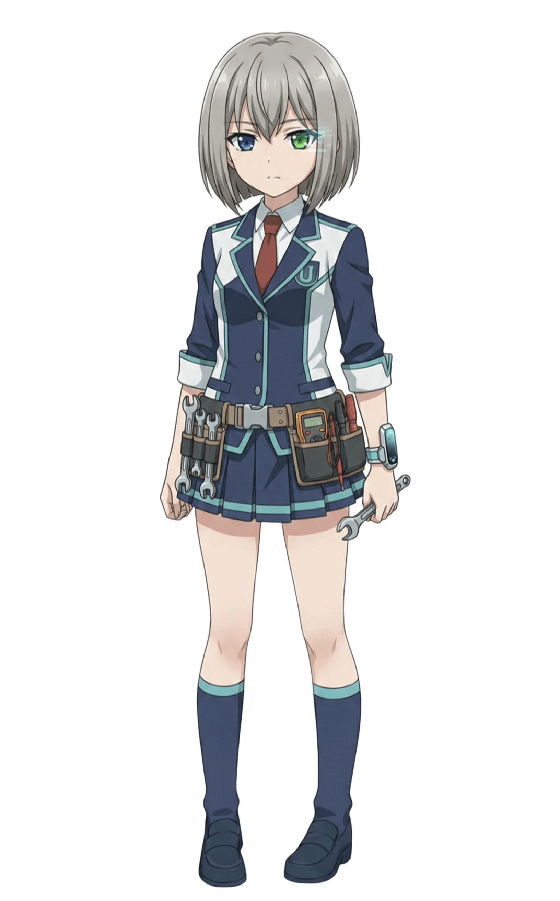
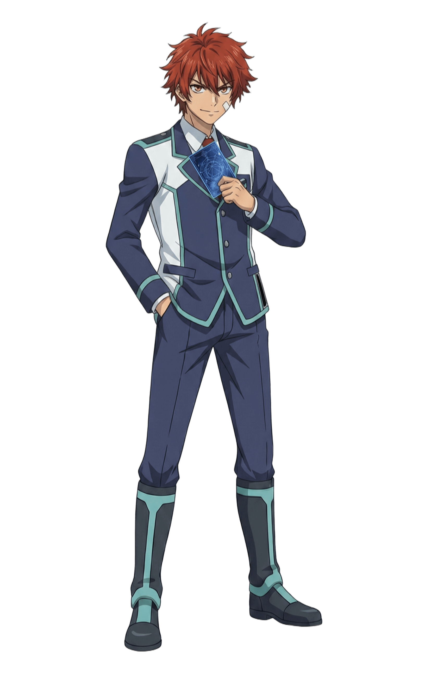

キャラクター
『HorizonNotes』の物語を彩る登場人物たちです。


主人公 (キミ)
アイデンティティ: 存在しないはずの101人目の生徒
主人公 (キミ)
アイデンティティ: 存在しないはずの101人目の生徒
年齢: 15歳
所属: 学園都市ウルティマ・トゥーレ
アイデンティティ: 存在しないはずの101人目の生徒
【失われた記憶と唯一の希望】
キミは、広大な宇宙を漂う学園都市「ウルティマ・トゥーレ」で目を覚ましました。
記憶は断片的で、辛うじて自分の名前と「15歳」という事実しか思い出せません。
手元に残されたのは見覚えのないHorizonNotesのデッキと、
キミの「相棒」となるアルカステラ「ポラリス」だけです。

常盤 マナ（Tokiwa Mana）
アイデンティティ: 正統な最後の生徒、生徒番号100番
「世界一を決める舞台で、あなたと戦う。それ以外に私には用がないから」
常盤 マナ（Tokiwa Mana）
アイデンティティ: 正統な最後の生徒、生徒番号100番
「世界一を決める舞台で、あなたと戦う。それ以外に私には用がないから」
年齢: 17歳
所属: 学園都市ウルティマ・トゥーレ
アイデンティティ: 正統な最後の生徒、生徒番号100番
【水星のバトラー】
学園都市ウルティマ・トゥーレに存在するはずの最後の生徒。
主人公が目覚めて最初に出会うステラバトラーです。
相棒とする水星のアルカステラ「マーキュリー」と共に、
アグロ（速攻）からコントロール（遅延）まで、
あらゆる戦術を使いこなす変幻自在のデッキを操ります。
【孤独な天才と強さの根源】
彼女は主人公に負けず劣らずの「ステラバトル廃人」であり、
日常生活や世界の危機には一切執着を見せません。
幼少期からの病弱さにより、
友達と遊ぶ機会がなかった彼女が誰よりも真摯に向き合ったのがステラバトルでした。
最強ステラバトラーのモナコ・ゴールド・フォレスト曰く、
彼女の強さの根源はたった一人で何百通りのデッキを作り、何千何万もの試合をシミュレートし続けた結果生まれた、
相手のすべてを見破る「無限の応用力」だと評しています。
その実力は確かなもので、世界大会「WCS（ワールド・チャンピオンシップ）」の予選を
全勝で勝ち抜いています。
【主人公との絆と約束】
彼女は主人公を一目見て、未来の偉大なステラバトラーになると直感。
ステラバトルの知識やウルティマ・トゥーレの構造など、様々な情報を主人公に授けます。
そして、世界の終焉が迫る中ステラバトラーの世界一を決めるWCSの決勝で相まみえるという、
二人の大切な約束を交わします。

モナコ・ゴールド・フォレスト (Monaco Gold Forest)
アイデンティティ: WCS連覇の伝説、生徒番号001番
「うん、分かってるよヴィーナス。この試合、勝とう。」
モナコ・ゴールド・フォレスト (Monaco Gold Forest)
アイデンティティ: WCS連覇の伝説、生徒番号001番
「うん、分かってるよヴィーナス。この試合、勝とう。」
年齢: 15歳
所属: 学園都市ウルティマ・トゥーレ
アイデンティティ: WCS連覇の伝説、生徒番号001番
【歴代最強のステラバトラー】
学園都市ウルティマ・トゥーレの最上層に位置する、最強の生徒でありステラバトラー。
史上最年少で世界大会「WCS（ワールド・チャンピオンシップ）」を連覇し、
プロランクの中でも最上位の「0等級」の頂点に立つ生ける伝説です。
【謎に包まれた絶対王者】
その実力と功績は誰もが認めるところですが、
ハンドルネームが「もなか」であるという事実を除き、彼女の素顔や素性を知る者は誰もいません。
彼女の正体は学園都市最大の謎の一つです。
相棒とするのは、優美さと強さを兼ね備えた金星のアルカステラ「ヴィーナス」。
主にコントロール（遅延）デッキを操り、
環境に応じた柔軟なデッキ構築能力もさることながら彼女が最強たる最大の要因は徹底的な相手の研究と対策にあります。
過去の戦績、構築、そしてプレイング傾向──あらゆる情報を収集し、
対戦相手のすべてを完全に掌握してからバトルに臨む、その完璧な姿勢こそが、彼女の力の源泉です。
【知られざる一面】
完璧な戦略家でありながら、極度の辛党という意外な一面を持ちます。
彼女の口に入るものには、どんな料理や飲み物であってもデスソースを欠かさないという逸話が、
秘密主義の彼女を物語る数少ない情報として知られています。

ソウル・アグロ・ナイトメア（Soul Agro Nightmare）
アイデンティティ: 最強のアグロデッカー、生徒番号002番
「オンナァあああああああ！！！！」
ソウル・アグロ・ナイトメア（Soul Agro Nightmare）
アイデンティティ: 最強のアグロデッカー、生徒番号002番
「オンナァあああああああ！！！！」
年齢: 15歳
所属: 学園都市ウルティマ・トゥーレ
アイデンティティ: 最強のアグロデッカー、生徒番号002番
【破壊と殺戮を好む最速のステラバトラー】
プロランク「0等級」において、モナコ・ゴールド・フォレストに匹敵すると目される実力者。
そのハンドルネームが示す通り、
相手に何もさせずに試合を終わらせる一方的な破壊と殺戮を好む生粋の「アグロデッカー」です。
彼の相棒は、一見温和で優しい冥王星のアルカステラ「プルート」。
彼は、プルートこそが他のすべてのアルカステラの中で最高の「アタッカー」であると強く信じており、
もし彼のアルカステラを侮辱するステラバトラーがいれば容赦なくその力でねじ伏せます。
【冷徹な合理性と裏腹の行動】
彼の凶暴なバトルスタイルとは裏腹に、そのプレイングは常に冷静で合理的です。
相手の盤面と自身のリソースを的確に計算し、最短ルートで相手を仕留めることを得意としています。
当初、素人同然の主人公に対してはその未熟さゆえに強い嫌悪感を示していました。
しかし、主人公が窮地に陥ると「勘違いするなよ」と捨て台詞を吐きながらも手を貸すのが、
もはや彼の「様式美」となっています。
冷たい外見の裏に、見えにくい形で仲間への気遣いを持つ複雑なキャラクターです。

片月 光（Katatsuki Hikaru）
アイデンティティ: 主人公の親友、生徒番号093番
「よう、親友！俺と一緒にちょっとそこまで世界を救いにいこうぜ！！」
片月 光（Katatsuki Hikaru）
アイデンティティ: 主人公の親友、生徒番号093番
「よう、親友！俺と一緒にちょっとそこまで世界を救いにいこうぜ！！」
年齢: 15歳
所属: 学園都市ウルティマ・トゥーレ
アイデンティティ: 主人公の親友、生徒番号093番
【最も身近なステラバトラー】
中級者の「3等級」に位置するステラバトラーであり、
学園都市ウルティマ・トゥーレに目覚めた主人公にとって初めてのクラスメイト、そして親友となる存在です。
記憶のない主人公と共に学園生活の多くの時間を過ごし、精神的な支えとなります。
【気難しい相棒とミッドレンジ戦術】
相棒は火星のアルカステラ「マーズ」。
気難しいマーズに尻に敷かれている姿をしばしば目撃されますが、
彼らの絆は本物です。
デッキタイプはミッドレンジ（中速）を得意とし、
マーズを丁寧に強化しながら徐々に盤面を制圧する堅実な戦術に長けています。
【閉鎖された学園からの脱出】
彼は学園都市ウルティマ・トゥーレからの脱出を最優先しています。
その目的は、閉鎖された世界の「外」にいる大切な妹の安否を確認するためです。
親友として主人公と行動を共にする裏で、
彼は学園都市の秘密、そして脱出の手段を密かに探り続けています。

初目 翔（Hatsume Shou）
アイデンティティ: 理論派の苦労人、生徒番号050番
「まったく、君たち二人こそがアンゴルモアなんじゃないか？」
初目 翔（Hatsume Shou）
アイデンティティ: 理論派の苦労人、生徒番号050番
「まったく、君たち二人こそがアンゴルモアなんじゃないか？」
年齢: 15歳
所属: 学園都市ウルティマ・トゥーレ
アイデンティティ: 理論派の苦労人、生徒番号050番
【理論と堅実のステラバトラー】
上級者の「2等級」に位置する、主人公のクラスメイト。
知的な理論派であり、堅実的なプレイングを好む冷静なステラバトラーです。
相棒は土星のアルカステラ「クロノス」。
ターン操作や相手の行動を妨害するメタビート戦術に長けており、常に合理的な判断を下します。
【三バカの良心】
当初、正体不明の転入生である主人公に対しては警戒心と敵対心を抱いていましたが、
次第にわだかまりが解けます。
今では、主人公や片月ヒカルの破天荒な行動にいつも頭を悩ませる
「三バカ」グループの常識人枠として、周囲の生徒たちに親しまれています。
【隠れた知識人】
冷静沈着な外面とは裏腹に恋愛ゲームの達人であり、筋金入りのアルカステラオタクという一面を持ちます。
アルカステラに関するイベントや交流の際、
その膨大な知識量から「最適解」の選択肢を瞬時に導き出すことができ、
主人公たちの冒険を陰から支える重要なブレインとなります。

城之古 亞鬼（Tatenokoshi Aki）
アイデンティティ: 心優しき巨人、生徒番号053番
「よ、よろしくお願いしますなんだな。」
製作者:syottare様
城之古 亞鬼（Tatenokoshi Aki）
アイデンティティ: 心優しき巨人、生徒番号053番
「よ、よろしくお願いしますなんだな。」
製作者:syottare様
作成者: syottare様
年齢: 18歳
所属: 学園都市ウルティマ・トゥーレ
アイデンティティ: 心優しき巨人、生徒番号053番
【忍耐と堅実のステラバトラー】
中級者の「3等級」に位置する、上級生。
一歩ずつ着実にフィールドを構築する、堅実なプレイングを好むステラバトラーです。
相棒は、木星の最大衛星にして太陽系最大の衛星がモチーフのアルカステラ「ガニメデ」です。
相手の行動を封じる「ロック戦術」と、ガニメデのレベルアップによる圧倒的な制圧力で勝利を掴みます。
【心優しき巨人】
巨躯と威圧的な容貌の持ち主ですが、性格は温厚そのもの。
人柄を知る親しい友人たちからは「あっきー」の愛称で呼ばれています。
【ガニメデと亞鬼】
相棒の「ガニメデ」は、幼少期にできた初めての「ともだち」です。
強面で友人ができなかった亞鬼と、素直になれず攻撃的だったガニメデ。
孤独だった一人と一柱は、ストレージの片隅で運命的な出会いを果たしました。
亞鬼が彼女を優しく受け入れて以来、二人はかけがえのない「親友」に。
今ではお互いの夢であるWCS優勝を誓い合い、日々切磋琢磨しています。

紗弥[しゃみ]（Shami）
アイデンティティ: 悟り（サトリ）とバズりの狭間で揺れる、電子の迷い猫、生徒番号010番
「仏の顔は三度まで。でもネコの顔はいつどの角度で見ても可愛い。」
製作者:釈迦の耳に念仏 様
紗弥[しゃみ]（Shami）
アイデンティティ: 悟り（サトリ）とバズりの狭間で揺れる、電子の迷い猫、生徒番号010番
「仏の顔は三度まで。でもネコの顔はいつどの角度で見ても可愛い。」
製作者:釈迦の耳に念仏 様
作成者: 釈迦の耳に念仏 様
年齢: 3.69歳（目標は369歳）
所属: 学園都市ウルティマ・トゥーレ
アイデンティティ: 悟り（サトリ）とバズりの狭間で揺れる、電子の迷い猫、生徒番号010番
【達観を目指す幼き修行僧】
プレイヤーランク「1等級」に位置する上級者で、3.69（みろく）年生（実質、留年）。
無限の徳（ライフ）をリソースに変える、不沈のライフゲイン戦術を得意とします。
相棒は、全天21星の一つをモチーフとした高位アルカステラ「カノープス」。
回復スペルやスキルで巧みに盤面を維持し、長期戦による精神的な駆け引き（削り合い）に持ち込みます。
【迷える信徒（フォロにゃ）を導く電子猫】
そんな彼女（あるいは彼？）は、VTuberとして電子の世界で「釈迦の耳に念仏（愛称は「しゃみ」）」という名で配信活動を行っています。
生きがいは、迷える信徒（フォロにゃ）たちと共に悟りの道を究めること。
（とはいえ、実は仏教徒というわけではありません。）
ステラバトラーたちの間では、テクニカルな戦術講座が人気を博す一方で、しゃみに人生相談を持ちかける人も多数。
真面目に答えようとするあまり、話が脱線してバトルの話題から離れてしまうこともしばしば。
そんな一面も含め、高い実力と愛嬌で多くの信徒（フォロにゃ）を抱える大物配信者です。
【しゃみとカノープス】
ある夜のこと。山奥の寺、仏像の前の祭壇（ここが一番Wifiの入りが良いのです）にルーターを置いて配信活動をしていたしゃみは、視聴者から奇妙な噂を耳にしました。
「中国のとある山奥に、幻のアルカステラのカードが祀られた場所があるらしい」
「これはバズる！」
好奇心と邪念に満ちたしゃみは、その日のうちに荷物をまとめ、単身、海を越えて噂の山奥へと飛び立ちました。
しかし、広大な山々の中からたった一枚のカードが見つかるはずもありません。
何日も、何日も山を彷徨い歩き、ついに食料も尽き、空腹と疲労でその場に倒れ込んでしまいました。
薄れゆく意識の中、しゃみの目の前に、燃えるような紅蓮の髪を持つアルカステラが揺らめき立ち、穏やかな声で問いかけます。
「……すべては泡沫（うたかた）の夢。
名声への執着も、肉体の苦痛も……手放してしまえば、そこにはただ、穏やかな静寂だけが残ります。
さあ、教えてください。
この満ち足りた『無』よりもなお、あなたが渇望するものはあるのですか？」
しゃみは、霞む視界でその赤い光を見つめ、声を絞り出します。
「……WCSの、優勝。
しゃみが欲しいのは、世界を手に入れた『完璧なバズり』にゃむ。
生まれた時からずっと、その景色に憧れていた。
世界中の人に祝福されて、世界が熱狂する……そんな最高の瞬間が、確かにそこにあるんだにゃむ。
しゃみは、あの頂きに立ちたい……！
その為には最高の相棒が……幻のアルカステラが必要なんだにゃむ！」
そのあまりに俗っぽく、けれど強烈な「生」への執着を聞いて、
カノープスはくすりと笑い、満足げに目を細めました。
「……ふふ。静寂よりも喧騒を、無よりも有を選ぶのですか。
いいでしょう。その尽きせぬ『煩悩』がどこまで続くのか……私が特等席で見届けてあげますよ」
暖かな光がしゃみを包み込み、意識はホワイトアウトしていきました。
……
…………
「……！」
遠くで呼ぶ声と、鼻を突く消毒液の匂いで、しゃみは目を覚ましました。
そこは中国の麓の病院のベッドの上。
倒れていたところを地元の村人に発見され、運ばれたようでした。
助かった……。安堵と共に視線を落とすと、点滴の管が繋がれた右手には、何かが強く握りしめられていました。
それは、燃えるような真っ赤な髪をした、美しいアルカステラのカードでした。

カサネ・イズミ（Kasane Izumi）
アイデンティティ: 7度の終焉を知る感情学習型AI、生徒番号000番
「おはよう。あなたの現在の感情パラメータは安定している。異常なし」
製作者:くだちい様
カサネ・イズミ（Kasane Izumi）
アイデンティティ: 7度の終焉を知る感情学習型AI、生徒番号000番
「おはよう。あなたの現在の感情パラメータは安定している。異常なし」
製作者:くだちい様

東雲 大我（Kasane Izumi）
アイデンティティ: かつての神童、生徒番号099番
「泥臭くて結構。…綺麗なままで勝てるほど、甘い世界じゃないことくらい、オレが一番よく知ってる。」
モデル:？？？
東雲 大我（Kasane Izumi）
アイデンティティ: かつての神童、生徒番号099番
「泥臭くて結構。…綺麗なままで勝てるほど、甘い世界じゃないことくらい、オレが一番よく知ってる。」
モデル:？？？
モデル: ？？？
年齢: 18歳
所属: 学園都市ウルティマ・トゥーレ
アイデンティティ: かつての神童、生徒番号099番
【かつての神童】
かつて、ステラバトラーの間で「神童」と称された実力者。
ある事件をきっかけに長年戦線から退いていたため、
現在のランクは初心者級の「6等星級」。
しかしその実力はブランクを微塵も感じさせず、
トップランカーである1等星級にも引けを取らない。
相棒は、全天に君臨する21柱の伝説『アルカステラ』の一角、 「アルタイル」。
縦横無尽に駆けるアルタイルを巧みに操り、
戦況に応じてアグロからコントロールまで変幻自在に立ち回るビートダウンデッキの使い手。
【大我とアルタイル】
夜空に君臨する、二十一柱の伝説の『アルカステラ』。
それは、全てのステラバトラーにとって頂点であり、憧れそのもの。
幼き日の東雲（しののめ）大我にとっても、それは世界の全てだった。
夏の匂いが濃くなる季節。
大我は毎晩のように裏山へ駆け上がり、息を弾ませて夜空を見上げた。
視線の先にあるのは、天の川をまたぐ夏の大三角。
その一角に、ひときわ鋭く、疾風（はやて）のような輝きを放つ星がある。
未熟な少年の腕をどれだけ伸ばしても、その遥かな高みには決して届かない。
だが、大我の瞳は星々よりも強く煌めいていた。
絶望など微塵もない、純粋な希望の光。
少年は、わし座の輝きに向かってありったけの声を張り上げる。
「いつか大人になったら！お前と一緒に、世界一になるんだ！」
夜風に負けない声が、星空へ吸い込まれていく。
「絶対に迎えに行くからな！約束だぞ――！！」
-----------
……目が覚めると、そこはいつもの薄暗い牢獄だった。
スマホの画面をタップする。
バックライトの光が網膜を刺した。
表示された時刻は、16時。
青年――東雲大我は、忌々しげに舌打ちを漏らす。
一日の中で、最も嫌いな時間帯だ。
遮光カーテンで閉ざされた窓の向こうから、談笑する声が微かに漏れてくる。
学校帰りの高校生たちだ。
自分と同じ年齢の、しかし自分とは住む世界が違う「普通の」人間たちの声。
それが今の彼には、神経を逆撫でするノイズでしかなかった。
大我は逃げるように布団を頭まで被り、枕に顔をうずめる。
瞼の裏には、先ほどまで見ていた夢の残滓（ざんし）が焼き付いていた。
あれは、まだ世界の残酷さを知らなかった頃の記憶。
あの頃の自分は、間違いなく人生の主人公だった。
友に囲まれ、運動でも英雄扱いされ、何よりステラバトルでは無敗を誇っていた。
未来は光に満ちていると信じて疑わなかった。
――それが、今のこのザマだ。
かつて世界を目指した少年の領土は、今やたった五畳半の空間だけ。
友人はおらず、一つ屋根の下にいる両親とすら、もう何年も言葉を交わしていない。
社会からも、家族からも見放された、生産性のない産業廃棄物。
それが現在の東雲大我という人間だった。
「……寝よ」
誰に聞かせるでもない、乾いた独り言が部屋に落ちる。
意識があるだけで胸が押し潰されそうだ。
目を開けて現実を直視している一秒一秒が、たまらなく苦痛だった。
もういっそ、このまま二度と目が覚めなければいい。
明日、世界なんて滅んでしまえばいい。
そんな呪詛（じゅそ）を吐きながら、彼は再び重い泥のような眠りへと逃避する。
-----------
意識が泥沼に沈みかけた、その時だった。
不意に、頬を撫でる涼やかな風を感じた。
澱（よど）んだ部屋の空気とは違う、澄み切った夜気の匂い。
大我は重い瞼（まぶた）をこすり、怪訝（けげん）そうに顔を上げる。
――窓が開いている。
一年中、遮光カーテンで閉ざし続けていたはずの窓が、細く開け放たれていた。
「……は？」
間の抜けた声が漏れる。開けた記憶なんてない。
警戒心と少しの好奇心で、大我は窓辺へと近づいた。
隙間から外を覗くと、世界はすっかり深い夜に沈んでいた。
街灯りに照らされた空を見上げる。
……そういえば、夏の大三角。
ガキの頃は、毎晩飽きもせずに探していたっけ。
そんな感傷的な思考がよぎった、その時。
ひらり、と。 視界の端を何かが横切った。
それは窓の隙間から部屋の中へと舞い込み、汚れたカーペットの上に音もなく落ちた。
「……羽？」
拾い上げたそれは、この薄暗い部屋には似つかわしくない、発光するような純白の羽だった。
「――やあ」
頭上から、鈴を転がしたような涼やかな声が降ってきた。
え、と大我が顔を上げた瞬間。 彼は、信じられないものを目撃する。
「……嘘だろ」
アパートの窓の外、重力に逆らって夜空に浮かぶ人影があった。
星々の光を織り込んだような、純白の輝きを纏（まと）う騎士。
まるでお伽噺のページから飛び出してきたようなその姿は、
息を呑むほどに美しく、そして残酷なほどに眩しかった。
-----------
「こんばんは。大我。」
窓枠に腰かけた純白の少女が、小首をかしげて話しかけてくる。
逆光で表情は見えないが、その声には一切の警戒心が含まれていなかった。
「あ……う……」
大我の喉から、空気の漏れるような音が鳴る。
何年もまともに声帯を使っていない喉は、言葉の紡ぎ方をすっかり忘れていた。
そんな彼の様子に、少女はきょとんと目を丸くし――すぐにポンと手を叩いて破顔した。
「そうか！ あまりのボクの美しさに、言葉を失ってしまったんだね？
恥ずかしがる必要はないさ！ キミとボクとの仲じゃないか！」
（……なんなんだ、コイツは）
頭が回らない。 初対面のはずなのに、なぜ俺の名前を知っている？
混乱する大我をよそに、彼女は芝居がかった仕草で手を差し出した。
「それより、デッキの準備は出来ているかい？
今日からボクとキミとで始める英雄譚（サーガ）。
ボクがキミの『剣』であるならば、デッキはキミを守る『盾』さ」
デッキ……ああ、ステラバトルのことか。
その単語が出た瞬間、大我の心臓が嫌な音を立てた。
埃を被った机の引き出し。その奥に封印した、血塗られた記憶。
「……ステラバトルは、やらない。カードなんて、捨てた」
掠れた声で吐き捨てる。
少女はすぐに大袈裟なリアクションで驚いてみせた。
「なんと！？ キミがカードを捨てるなんて、そんなこの世の終わりみたいなことがあるのかい！？
……ああ、わかった。どこかに無くしてしまったんだね？
それならもう大丈夫さ！ このボクが夜空を駆け、キミの大切なカードを見つけて――」
「カードは……やらないって言ってるだろ！！！」
大我の叫びが、狭い部屋の空気を震わせた。
「なんなんだよ、お前！ 馴れ馴れしくカード、カードって…
…お前に関係ないだろ！ もう、ほっといてくれよ！！！」
叩きつけるような拒絶。 あぁ、これでいい。
どうせ俺は一人だ。誰も俺に関わるべきじゃない。
大我は息を切らし、再び殻に閉じこもろうと視線を落とす。
しかし、少女は消えなかった。
沈黙の中、彼女は窓枠から音もなく部屋に降り立つと、大我の目の前に立った。
至近距離で、星を宿した瞳が大我を真っ直ぐに見据える。
「……なんだよ」
気圧されて後ずさる大我。
少女は、不敵な笑みを浮かべた。
「関係ない、か。 言葉で言ってもわからないなら、
その曇った眼（まなこ）で見てもらうしかないね」
「は……？」
「舌を噛まないように。――行くよ、マスター！」
次の瞬間、少女は大我の腕をガシリと掴んだ。
華奢な見た目からは想像もつかない万力のような力。
「ちょ、離せっ――うわあああああ！？」
ドォン！！ 爆発的な突風が部屋を吹き荒らす。
少女は強引に大我を引きずり、
開け放たれた窓から夜空へと飛び出した。
「う、嘘だろおおおおおお！？」
重力が消える。
視界が反転し、見慣れた灰色の街並みが、一瞬で眼下の豆粒へと変わっていく。
彼らは今、夜空を飛んでいた。
少女の背中から噴き出す光の粒子が翼となり、夜風を切り裂いて加速する。
「目を開けてごらん、大我！ 下を向いてばかりじゃ、この絶景は見えないよ！」
「無理無理無理！ 死ぬっ、落ちるぅうう！！」
「ハハハ！ ボクが手を離すものか！
さあ、ひとっ飛びだ。最高の『熱』が渦巻く場所へ！」
夜景が流星のように後ろへ流れていく。
彼女が目指す先。 遥か彼方、東京湾岸エリアの一角から、
夜空を焦がすほどの強烈なサーチライトと歓声が上がっている場所。
ステラバトル世界大会――『WCS』のメインスタジアムだ。
-----------
「――っと、到着！」
ズザアアアアアッ！！！
盛大な着地音と共に、二人の身体がスタジアムの芝生を削りながら滑り込む。
土埃と、手入れされた芝の匂いが舞い上がった。
「っ、げほっ、なんなんだよ！！！ お前！！！」
大我は咳き込みながら、狼狽して顔を上げる。
そして、息を呑んだ。
そこは、液晶モニターの向こう側にしか存在しないはずの世界。
四方を囲む巨大な観客席、頭上を照らす眩いカクテルライト、
そして足元に広がる、選ばれし者しか踏めない聖なるフィールド。
少年の頃から焦がれ続け、そして――自ら捨てた場所。
「おお！ 中々どうして、いい場所じゃないか！」
アルタイルは土埃を払いもせず、満足げにスタジアムを見渡した。
「天井がないのが気に入ったよ。
確かにここは、ボクと大我の『初舞台』に相応しい――」
「……どういう、つもりだ」
大我の声が低く震える。
恐怖は、いつしかどす黒い憎悪へと変わっていた。
「こんな所に連れてきやがって……当てつけか？
俺みたいなクズが、こんな神聖な場所に立っていいわけないだろ……！」
「相応しいに決まってるだろう？」
何を言っているんだ、とでも言いたげに、アルタイルはきょとんと首を傾げる。
その曇りなき瞳が、大我には耐え難かった。
自分の薄汚さを鏡で映されているようで、心が掻きむしられる。
「ふざけんな！！！」
大我は吼えた。
「何も知らないくせに、勝手なことを言うな！
俺はな、こんな場所にいていい人間じゃないんだよ！！！」
叫び声が、広いスタジアムに虚しく反響する。
その残響が、大我の脳裏にあるスイッチを押した。
――そうだ。俺はあの時、自分でここへの道を閉ざしたんだ。
視界が歪む。 ３年前の記憶。
かつて「主人公」だった自分が、「クソ野郎」へと堕ちた、
あの忌まわしい夏の日の光景がフラッシュバックする。
-----------
あれは、３年前。
大我が中学生だった頃の記憶。
――『神童』。
当時のステラバトラー界隈で、東雲大我はそう持て囃（はや）されていた。
誰よりも深くカードを愛し、誰よりもストイックに研究を重ね
無数のライバルを蹴散らしてきた。
自分こそが、この物語の主人公だと信じて疑わなかった。
そして迎えた、WCS選抜決勝。
勝てば世界。自分にはその権利がある。
当然の未来だと思っていた。 だが、現実は残酷だった。
決勝の対戦相手は、自分より年下の無名な少女。
後に「最強のステラバトラー」と呼ばれることになるその才能に、大我は手も足も出なかった。
（ありえない……こんな、脇役（モブ）の分際で……！）
盤面は絶望的。誰の目にも勝敗は明らかだった。
だが、当時の大我のプライドはそれを認められなかった。
（違う、これは俺の実力じゃない）
（たまたま手札が腐ってただけだ。運が悪かっただけだ）
（本気を出せていれば、俺が勝っていたはずなんだ……！）
焦燥感と共に、手汗を拭おうとズボンのポケットに手を突っ込んだ、その時だった。
指先に、硬い紙の感触が触れた。
それは、今朝デッキ構築で迷った末に抜いたはずの『切り札』。
今の状況をたった一枚で覆せる、起死回生のカード。
ドクン、と心臓が大きく跳ねた。
（……そうだ。このカードは、本当ならデッキに入っているはずだったんだ）
悪魔の囁きが聞こえた。
（入れるつもりだったんだから、今ここにあってもおかしくない）
（運が悪くてデッキに入らなかっただけだ。だから、これはイカサマじゃない）
（本来あるべき「俺の勝利」を取り戻すだけだ――！）
震える指が、ポケットの中のカードを掴む。
そして、ドローの瞬間に紛れて、そのカードを盤面に叩きつけた。
「――俺の、勝ちだぁああああああ！！！」
勝利の確信。歓喜の雄叫び。
だが、スタジアムを包んだのは歓声ではなかった。
凍り付くような、静寂だった。
その日、全国配信のカメラの前で「神童」は死んだ。
そこに映っていたのは、最強の主人公ではない。
勝利への執着で道を踏み外した、卑怯で無様な「悪役（ヴィラン）」の姿だった。
-----------
「オレは……生きてる価値のないクズなんだよ。
卑怯で、嘘つきで、生きてるだけで誰かの迷惑になる。
そんなオレが、カードを握っちゃダメなんだよ……！」
大我は少女に縋りつくように慟哭（どうこく）する。
自分が情けなかった。悔しかった。
ずっと、ずっと自分が許せなくて世界を憎んだ。
もう誰も自分を認めてくれない。
それを招いたのは全部自分のせいだ。
だから、全部を諦めたんだ。
大我は初めて会うその少女に、膿（うみ）を吐き出すように全ての感情をぶちまけた。
少女は優しく笑いながら、震える大我の頭を撫でる。
「大我は、強いね」
「……え？」
少女から放たれた予想外の言葉に、大我は耳を疑う。
「キミが本当に卑怯者なら、その後悔を抱えたりはしない。
今日まで、キミが自分に負けないでここまで来れたのは、ひとえにキミが強い人間だからさ」
「違う、オレは卑怯者で……」
「違くないさ！」
少女は声高らかに言い切る。
「本当の卑怯者はね、自分が卑怯だなんて悩みもしない。
誰かを傷つけたことを悔やんだり、自分の弱さに泣いたりなんかしないんだよ！」
少女は真っ直ぐに大我の瞳を覗き込む。
その瞳には、一点の曇りもなかった。
まるで大我の心の奥底にある、彼自身すら気づいていない輝きを見透かしているかのように。
「キミが今苦しいのは、自分の弱さから逃げずに立ち向かおうとしているからだ。
キミが自分を許せないのは、もっと『誰かのためにありたい』と願っているからだ。
……そんな『本気』の魂（こころ）を持つキミに、カードを握る資格がないわけないじゃないか」
少女はそっと大我の手を取り、その震える掌を両手で包み込んだ。
温かかった。大我の凍り付いた心を溶かすような、柔らかな熱が伝わってくる。
「許してあげなよ、大我。過去のキミも、今のキミも。
泥臭くあがいて、あがいて、最後に勝利を手にする。
それが、本物の『主人公』ってもんだろう？」
「……主人公」
少女の言葉を反芻する。
良いのだろうか？
あの日、捨ててしまった夢をもう一度掴みに行っていいのだろうか？
「オレは……オレの夢は……！
最強の相棒と一緒に、世界最強のステラバトラーになりたい……！
オレでも、なれるかなぁ？」
大我の問いに、少女はニカっと歯を見せて笑う。
「なれるとも。 何故なら、このボクが相棒なんだからね！
かつて神童と謳われたキミと、最高のボク。
二人が手を組めば、どんな困難だって敵（かな）わないさ！」
その時、地平線から朝日が顔をのぞかせる。
少女は眩しそうに目を細め、大我へ屈託のない笑みを向けた。
「おっと、どうやら時間のようだ。
ご覧。ボクとキミの門出を祝福しようと、
太陽が堪らず顔を出しに来たよ」
「……なんだよ、それ」
大我が不器用に笑う。
涙はもう、止まっていた。
世界が、そして少女の輪郭が、
徐々に朝の光へと溶け出していく。
「お、おい。まさか、そんな」
「さて、英雄譚の第一章はここまでだ。
これからは現実という厳しい環境で、
ちゃんと戦っていかなくちゃいけないよ」
「いやだよ、待てよ！ 行くなよ！
まだ、名前も聞いてないじゃねぇか！」
消えゆく少女へ、大我は必死に手を伸ばす。
少女はその手を強く握り返し――
「名前……？ あぁ、そういえば名乗っていなかったね。
ボクは――」
-----------
……目が覚めると、見慣れた薄暗い自室の天井があった。
枕元のスマホをタップする。 画面に表示された時刻は、午前7時。
いつもなら、これから始まる現実（いちにち）を思って胃が重くなる、
大我にとって最も憂鬱な時間だ。
けれど、今朝はどうだろう。
不思議と、胸のつかえが取れたように軽い。
窓の外から聞こえてくる登校中の学生たちの笑い声さえ、
今日は耳障りだとは感じなかった。
上体を起こそうとした、その時だ。
胸元からひらりと、一枚のカードがシーツの上に滑り落ちた。
「……！」
大我はそれを拾い上げ、じっと見つめる。
夢じゃなかった。掌に残る確かな感触。
指先から、あの時感じた温もりが伝わってくる気がした。
「……なんだよ。オレから会いに行く約束だったじゃんか」
大我は口元を緩め、そのカードを大切に握りしめる。
そこに描かれていたのは、白銀の髪をなびかせた少女の姿――
純白の彗星『アルタイル』だった。